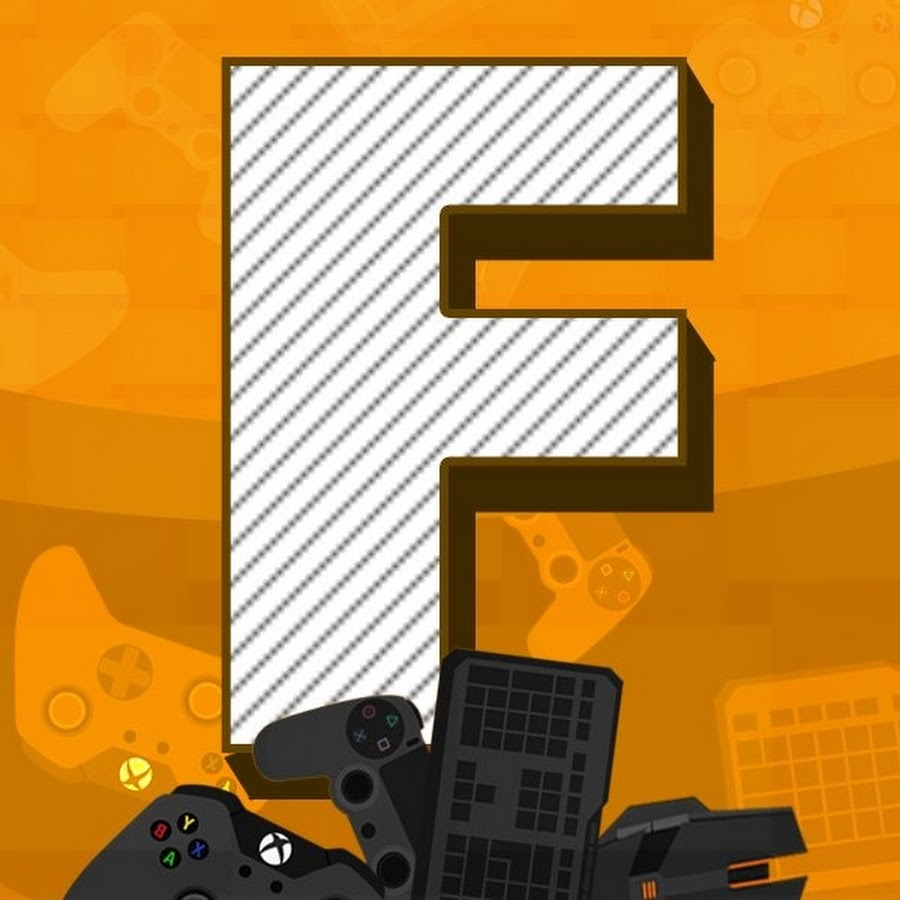

О компании

Fasters was founded in 2009, when YouTube channel was born. Our company to this day operates in two cities, such as: St. Petersburg and Moscow.
1. Что такое компьютер?
2. Как правильно подобрать комплектующие для пк?
3. Список терминов
4. Таблица готового пк для офисных задач